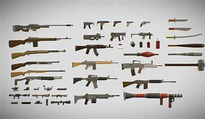

home
Weapons Shop
About
creator
Contact
Welcome To My Weapons Shop
Weapons are tools and objects designed for hunting or combat. The most common types of weapons were bows,
arrows, spears, pikes, and swords.
Other weapons were axes, favored by the Dwarves and few Elves (such as Rog).
Most of the boys like guns among them because it is powerful and easy to use. I like guns too. But, It is
dangerous to use.
Showroom

-
Biological weapons are toxic materials produced from pathogenic organisms (usually microbes) or artificially
manufactured toxic substances that are used to intentionally interfere with the biological processes of a
host.
-
These substances work to kill or incapacitate the host.
-
A weapon, arm or armament is any implement or device that can be used with the intent to inflict physical
damage or harm.
-
Weapons are used to increase the efficacy and efficiency of activities such as hunting, crime, law
enforcement, self-defense, and warfare.
-
In broader context, weapons may be construed to include anything used to gain a tactical, strategic,
material or mental advantage over an adversary or enemy target.
Thank For Visiting
Copyright (Zaw Lin Htet) 2021-2022